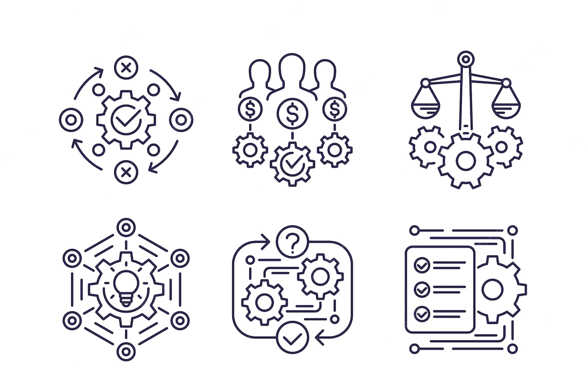

.png)

1.КАК СДЕЛАТЬ САЙТ ДЛЯ БИЗНЕСА: ОСНОВНЫЕ МОМЕНТЫ И СОВЕТЫ ПРЕДПРИНИМАТЕЛЯМ?✅
Итак, вы поняли, что вам нужен сайт. Поздравляем!
Это ͟п͟е͟р͟в͟ы͟й͟ ͟ш͟а͟г к продвижению бизнеса в интернете.
В этой статье расскажем, что должно быть на сайте ИП или организации, которые продают товары или услуги.
⏹ЧТО НУЖНО СДЕЛАТЬ ДО СОЗДАНИЯ САЙТА?⏹
⓵-Определим цели-
Сначала уточним, для чего вообще нужен сайт:привлечь новых клиентов?
Даже если ваш бизнес давно и успешно работает в офлайне и имеет свою постоянную ЦА, новая аудитория никогда не помешает;выйти в другие регионы.
Если вы работаете в пределах своего города, вас все знают – это отлично, но заказчики из других городов просто не имеют представление о вашем бизнесе.
Надо им помочь;повысить статус компании!
«Как, у вас даже сайта нет?!» - если вы часто слышите эту фразу, значит, пора что-то менять!
Pассказать о новом товаре или услуге, которую вы запустили и хотите продвигать.
Hаладить обратную связь с клиентами, которым удобнее обращаться к вам по интернету; увеличить прибыль в результате всех этих действий.
Смотря какие цели вы ставите – такой сайт вам и нужен: визитка, лендинг, полноценный корпоративный сайт, интернет-магазин.
Об этом расскажем чуть ниже.
②-Определим ЦА-
●Теперь уточним, для кого мы делаем сайт.
●Кто будет изучать ваш сайт?
●Откуда он про него узнает, что будет там искать?
От ЦА зависит все: дизайн сайта, его наполнение, тексты, приложения и виджеты.
Например, если ЦА – молодежь, сайт нужно наполнить современными эффектами, чтобы попасть точно в яблочко.
Если пожилые люди – облегчить им задачу: использовать крупные шрифты, детально объяснять каждое действие, писать как для чайников.
Бывает так, что видов ЦА много: вашими услугами пользуются и молодые, и старые, и мужчины, и женщины. В этом случае лучше сделать основной сайт и несколько лендингов – свой на каждую аудиторию.
③-Выберем подрядчика-
Кто будет делать ваш сайт – знакомый программист, неизвестный фрилансер или надежная студия дизайна? Вариантов много.
Если хотите дешево, но без гарантий – найдите частного веб-дизайнера, если надежно, но подороже – воспользуйтесь сарафанным радио.
Оптимальный вариант, как нам кажется, – студия дизайна или диджитал-агентсво.
Там вы получите все гарантии, техподдержку, современный дизайн.
Решать вам!
ВИДЫ САЙТОВ:
Снова вспомним про цели и рассмотрим основные виды сайтов:
1. Сайт-визитка
Это обычный стандартный сайт, который есть у каждой компании или индивидуального предпринимателя.
Визитка - лицо бизнеса, именно этот сайт покажется в поисковике тем, кто наберет название вашей компании.
Соответственно, в нем содержится вся информация: кто вы, чем занимаетесь, что продаете, какие услуги оказываете.
По желанию на корпоративном сайте можно разместить такие разделы, как «Новости», «Вопрос-ответ», «Отзывы», информацию о руководителе и сотрудниках, обязательно – указать контакты.
Важное правило⏹: напрямую сайт-визитка ничего не продает – просто информирует посетителей о вашем бизнесе.
2. Составьте бизнес-план✅
Аргументы против бизнес-плана делятся на два типа:
●Зачем терять время, если в этой стране всё так непредсказуемо?
●А вот Стив Джобс, Генри Форд, Роман Абрамович добились успеха без бизнес-планов.
Здесь есть доля правды!
Просчитать всё невозможно, и многие известные бизнесмены просто занимались любимым делом без чёткого плана.
Но всё же базовые сценарии бизнеса и объем рынка просчитать стоит.
Это поможет структурировать мысли и избавиться от сомнений — или наоборот засомневаться в жизнеспособности идеи.
При прочих равных качественное планирование не помешает вам стать новым Стивом Джобсом.
Расходы произойдут обязательно при открытии любого бизнеса.
И какие-то статьи расходов, как аренда помещения для офиса, дорогое программное обеспечение, штат сотрудников – можно отложить на небольшое время.
Таким образом, вы сэкономите стартовый капитал.
И когда начнут поступать не только маленькие, но и выгодные заказы, вы вернетесь к этим пунктам расходов, чтобы качество вашей работы только повышалось.
Выбранный вами бизнес – выгоден.
И тому есть несколько причин.
Спрос на веб-услуги постоянно растет. Стартовые вложения в начало бизнеса изначально небольшие.
Заказчиков много, даже при наличии большого количества конкурентов. Так станьте же частью интернет-бизнеса, который развивается с такой высокой скоростью.